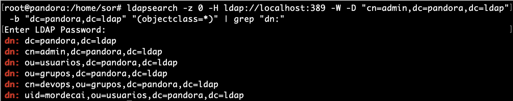
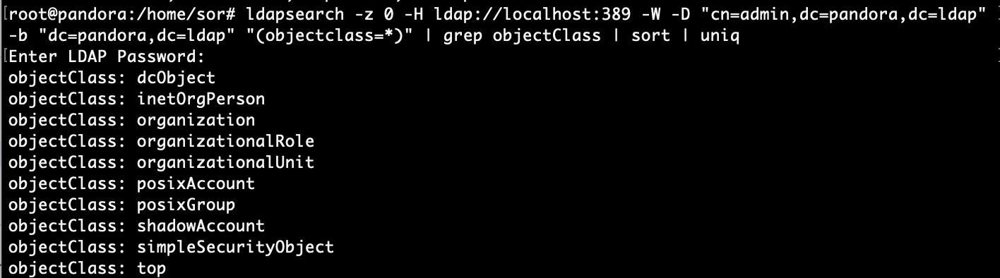

043 LDAP Esquema
Esquema LDAP¶
El esquema es una parte importante de LDAP. Similar a la definición del esquema de la base de datos, el esquema LDAP define la estructura y las reglas que debe seguir un directorio LDAP, como qué atributos tendrá una clase de objeto, qué estructura tienen estos atributos, etc.
- El servidor LDAP proporciona una manera de identificar categorías, atributos y otra información en el directorio LDAP, para que el servidor LDAP pueda reconocerlos. Para realizarlo se utlizan esquemas, que no es más que una unidad de empaquetado conveniente para contener clases de objetos y atributos muy similares.
- La principal diferencia con las bases de datos relacionales del protocolo LDAP es que estas ya están predefinidas en los esquemas. por lo que nos ahorramos en insertar y definir las tablas de información.
- En OpenLDAP los esquemas instalados se encuentran en cn = schema, cn = config y se pueden instalar esquemas adicionales usando este procedimiento.
El siguiente diagrama ilustra el uso de esquemas como unidades de empaquetado:

A nivel de comandos se pueden ver los esquemas predefinidos con:
cd /etc/ldap/slapd.d/cn\=config/
En el directorio cn\=schema se pueden ver los esquemas y ademas se pueden añadir más, pero no suele ser frecuente.
Para buscar los esquemas se puede utilizar:
grep olcObjectClasses cn\=\{3\}inetorgperson.ldif|awk '{print $5}'
grep olcObjectClasses cn\=\{2\}inetorgperson.ldif|awk '{print $5}'
grep olcObjectClasses cn\=\{2\}nis.ldif|awk '{print $5}'
grep olcObjectClasses cn\=\{1\}cosine.ldif|awk '{print $5}'
grep olcObjectClasses cn\=\{0\}core.ldif|awk '{print $5}'
Herramientas de gestión de usuarios.¶
Una vez configurado el servidor LDAP, para la utilización normal debemos aprender cómo se añaden nuevos usuarios o se modifican los atributos de los existentes.
-
Para los objetos iniciales del directorio, primero se debe escribir un fichero en formato LDIF que incluya todos los atributos de la entrada y añadirla al directorio con slapadd. En la Actividades Desarrollo UD2_01, se realizará un ejemplo guiado al respecto.
-
Este método es totalmente inadecuado para la utilización cuando el directorio está activo. Existen varias formas de actualizar las entradas del directorio o añadir nuevas, y en primer lugar veremos la utilización de las herramientas incluidas en el paquete ldap-utils.
ldap-utils¶
Para realizar modificaciones de los objetos del directorio directamente desde la línea de comandos, se pueden utilizar las herramientas del paquete ldap-utils, a continuación se describen algunas de ellas.
Mostrar entradas¶
ldapsearch- buscar y mostrar entradas
La herramienta ldapsearch resulta muy conveniente al momento de hacer consultas sobre los datos dentro de un directorio LDAP desde línea de comandos.
- A continuación se presentan una serie de consultas de ejemplo que pueden resultar muy útiles para obtener información valiosa de un árbol LDAP.
Obtener todos los objetos de un directorio¶
Para obtener todos los objetos en un directorio (dn) a partir de cierta base con el ejemplo de la práctica (dc=pandora,dc=ldap) y sin límite de para la respuesta, utilizar una consulta como la siguiente:
ldapsearch -z 0 -H ldap://localhost:389 -W -D "cn=admin,dc=pandora,dc=ldap" -b "dc=pandora,dc=ldap" "(objectclass=*)"
Note
-z 0: evita cortar la respuesta una vez alcanzado cierto límite (cantidad de entradas).-H ldap://localhost:389: indica que consulte al servidor LDAP en el puerto 389 del host local.-W: indica que solicite la contraseña para el método de autenticación simple de manera interactiva.-D "cn=admin,dc=pandora,dc=ldap": especifica el usuario con el cual se autentica en el servidor LDAP.-b "dc=pandora,dc=ldap": especifica la base desde donde comenzar la búsqueda (en este caso se trata de la raíz del directorio)."(objectclass=*)": especifica el filtro para la búsqueda (en este ejemplo todos los objetos, este a su vez es el filtro por defecto).
Warning
El punto importante es no olvidar especificar la base (-b). De lo contrario probablemente no haya resultados en la búsqueda:
- A este ejemplo se le puede añadir
greppara filtrar sólo los dn:
ldapsearch -z 0 -H ldap://localhost:389 -W -D "cn=admin,dc=pandora,dc=ldap" -b "dc=pandora,dc=ldap" "(objectclass=*)" | grep "dn:"
- El resultado sería parecido a:

Obtener todas las unidades organizacionales¶
Las ou (Organizational Unit) definen la jerarquía dentro de un dominio. Generalmente se utilizan para definir los departamentos o áreas dentro de una organización (empresa, red, sociedad, etc.).
Para obtener una lista de todas las ou presentes en un directorio, se puede utilizar el filtro "(ou=*)":
ldapsearch -z 0 -H ldap://localhost:389 -W -D "cn=admin,dc=pandora,dc=ldap" -b "dc=pandora,dc=ldap" "(ou=*)" | grep "dn:"
- Resultado

Listar todos los usuarios¶
Esta consulta depende de la jerarquía y la clase utilizada para almacenar usuarios dentro de un árbol LDAP. Sin embargo, generalmente se utiliza la clase inetOrgPerson para almacenar usuarios dentro de un directorio LDAP, la cual posee el atributo uid.
De esta forma, para listar todos los usuarios presentes en un directorio, simplemente recurrir al filtro "(uid=*)":
ldapsearch -z 0 -H ldap://localhost:389 -W -D "cn=admin,dc=pandora,dc=ldap" -b "dc=pandora,dc=ldap" "(uid=*)" | grep "dn:"
- Resultado

Determinar todas las clases en uso¶
Las clases de un directorio LDAP determinan el formato con el que se representan los datos de los objetos almacenados en el árbol. Cada objeto (entrada en un directorio LDAP) pertenece a al menos una clase. Sin embargo es común que cada objeto pertenezca a varias clases. Básicamente las clases definen qué atributos y de qué formato puede poseer un objeto.
Para listar todas las clases actualmente en uso por todos los objetos, es necesario volcar todo el contenido del árbol y filtrar con grep:
ldapsearch -z 0 -H ldap://localhost:389 -W -D "cn=admin,dc=pandora,dc=ldap" -b "dc=pandora,dc=ldap" "(objectclass=*)" | grep objectClass | sort | uniq
- Resultado

Manipular entradas¶
-
ldapmodify- modificar una entrada -
ldapadd- agregar una nueva entrada -
ldapdelete- eliminar y entrar -
ldapmodrdn- cambiar el nombre de una entrada -
ldappasswd: cambie la contraseña de una entrada
Ejemplos:¶
-
Añadir y eliminar nuevos grupos con
ldapadd&ldapdelete- Se crea un archivo .ldif para añadir un nuevo grupo y se añade con
ldapadd:
nano aso.ldifdn: ou=aso,dc=pandora,dc=ldap objectClass: organizationalUnit objectClass: top ou: asoldapadd -x -W -D "cn=admin,dc=pandora,dc=ldap" -f aso.ldif- Para borrarlo se utilizaría:
ldapdelete -W -D "cn=admin,dc=pandora,dc=ldap" "ou=aso,dc=pandora,dc=ldap" - Se crea un archivo .ldif para añadir un nuevo grupo y se añade con
-
Añadir y eliminar usuarios con
ldapadd&ldapdelete- Se crea un archivo .ldif para añadir un nuevo grupo y se añade con
ldapadd:
nano javier.ldifdn: uid=javier,ou=usuarios,dc=pandora,dc=ldap objectClass: inetOrgPerson objectClass: posixAccount objectClass: shadowAccount cn: Javier sn: Hernandez userPassword: {SSHA}latDDmodpsLUWDqwd/adk/j2tTDgz3NX loginshell: /bin/bash uidNumber: 10001 gidNumber: 10001 homeDirectory: /home/javierldapadd -x -W -D "cn=admin,dc=pandora,dc=ldap" -f javier.ldif- Para borrarlo se utilizaría:
ldapdelete -W -D "cn=admin,dc=pandora,dc=ldap" "uid=javier,ou=aso,dc=pandora,dc=ldap" - Se crea un archivo .ldif para añadir un nuevo grupo y se añade con
-
modificar
uidnumberde usuario existenteldapmodify- Se crea un archivo .ldif especificando las modificaciones:
nano cambios1.ldifdn: uid=javier,ou=aso,dc=pandora,dc=ldap changetype:modify replace:uidNumber uidNumber:10002- Para modificarlo se utilizaría:
ldapmodify -x -W -D "cn=admin,dc=pandora,dc=ldap" -f cambios1.ldif
Note
- Cuatro tipos de cambios son posibles
- add--adds a new entry
- modify--changes an existing entry, that is, it adds, deletes, or replaces attributes of the entry
- delete--deletes an existing entry
- modrdn--modifies the RDN of an existing entry
-
Añadir y cambiar contraseña a un usuario existente con
ldappasswd- Añadir contraseña
ldappasswd -s 1234 -W -D "cn=admin,dc=pandora,dc=ldap" -x "uid=javier,ou=aso,dc=pandora,dc=ldap"
Operaciones¶
-
ldapwhoami: muestra con qué entrada estoy vinculado al servidor -
ldapcompare: compara un campo en la entrada con algún valor
Configuración de OpenLDAP¶
slapd.conf¶
Es el archivo principal de OpenLDAP y es aquí donde se configuran todos sus parámetros.
Note
slapd.confse encuentra dentro del directorio/etc/ldap/slapd.d
Diseño de configuración¶
La configuración de slapd se almacena como un directorio LDAP especial con un esquema y DIT predefinidos.
- Hay clases de objetos específicas que se utilizan para llevar opciones de configuración global, definiciones de esquema, definiciones de base de datos y back-end, y otros elementos variados.

- En el servidor se podría observar:
El árbol de configuración de slapd-config tiene una estructura muy específica. La raíz del árbol se denomina cn = config y contiene ajustes de configuración global.
Directivas de configuración¶
De las directivas más comunes mostradas en el arblo se destaca centro de cn = config la directiva olcLogLevel
- Esta directiva especifica el nivel en el que las declaraciones de depuración y las estadísticas de operación deben registrarse en el syslog (actualmente registrado en la función syslogd (8) LOG_LOCAL4 ).
- Debe haber configurado OpenLDAP --enable-debug (el predeterminado) para que esto funcione (excepto para los dos niveles de estadísticas, que siempre están habilitados).
Configuración logging¶
El registro de actividad para slapd es muy útil cuando se implementa una solución basada en OpenLDAP, pero debe habilitarse manualmente después de la instalación del software. De lo contrario, solo aparecerán mensajes rudimentarios en los registros. El registro, como cualquier otra configuración similar, se habilita a través de la base de datos slapd-config .
- OpenLDAP viene con múltiples niveles de registro y cada uno contiene el más bajo (aditivo).
- Un buen nivel para probar son las estadísticas . La página de manual de slapd-config tiene más que decir sobre los diferentes subsistemas.
- Cree el archivo
logging.ldifcon el siguiente contenido:
dn: cn=config
changetype: modify
replace: olcLogLevel
olcLogLevel: stats
- Implementar el cambio:
sudo ldapmodify -Q -Y EXTERNAL -H ldapi:/// -f logging.ldif
Esto producirá una cantidad significativa de registro y querrá volver a un nivel menos detallado una vez que su sistema esté en producción. Mientras está en este modo detallado, el motor syslog de su host (rsyslog) puede tener dificultades para mantenerse al día y puede dejar caer mensajes:
Warning
rsyslogd-2177: imuxsock lost 228 messages from pid 2547 due to rate-limiting
Puede considerarse un cambio en la configuración de rsyslog. En /etc/rsyslog.conf, ponga:
# Disable rate limiting
# (default is 200 messages in 5 seconds; below we make the 5 become 0)
$SystemLogRateLimitInterval 0
- Y luego reinicie el demonio rsyslog:
sudo systemctl restart syslog.service
- Los Registros de OpenLDAP a través de syslogd LOCAL4 (Nivel warning de Syslog). Para transmitir el registro LDAP a un archivo separado de syslog, agregue una línea como esta a syslog.conf (
/etc/rsyslog.conf):
# a. agregar a syslog.conf
local4. * /var/log/ldap.log
# b. crear un archivo de registro vacío
toque /var/log/ldap.log
# c. reiniciar syslogd
killall -HUP syslogd
O
systemctl restart syslog.service